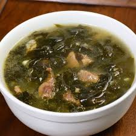

Me Yuk Guk Recipe

Korean Seaweed Soup
This recipe is a traditional Korean dish called Miyuk Guk that is full of emami flavours.
Miyuk guk is usually enjoyed with a bowl of rice and kimchi.
Ingredients
- Miyuk
- Garlic
- Ground Beef or Stew Beef
- Sesame Seed Oil
- Salt
- Pepper
- Soy Sauce
- Fish Sauce
Steps
- Soak miyuk in water for 20 mins
- Mince Garlic
- Remove and drain the miyuk and squeeze out any excess water
- Saute the miyuk, beef, and garlic in a pot
- Saute until the miyuk turn brighter green
- Add water to submerge all the ingredients
- Bring everything to a boil
- Season the soup with pepper, salt, soysauce, and fish sauce
- Boil for 5-10 mins and enjoy